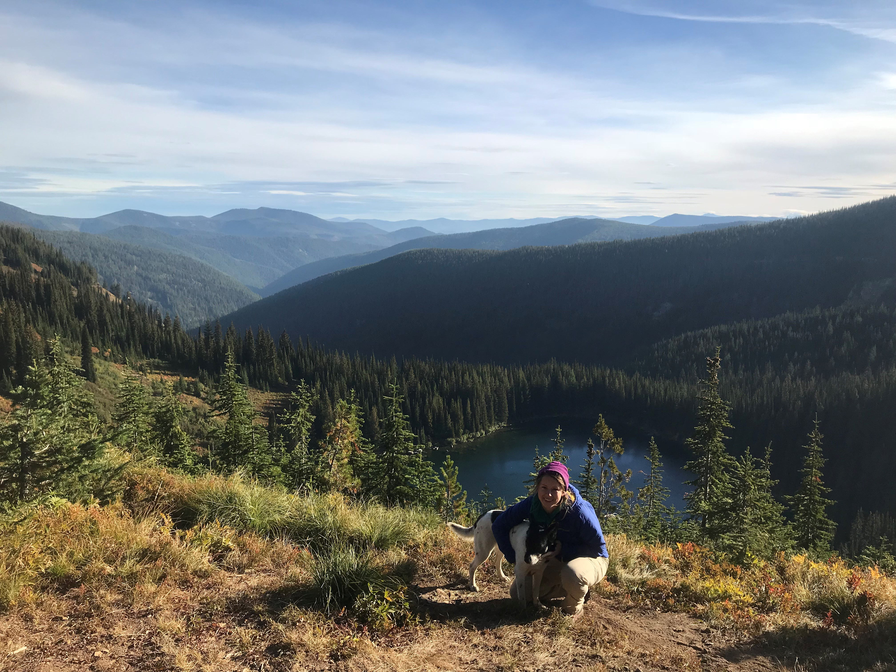

I am a ecosystem scienctist researching impacts of climate change, and land management wildfires on forest carbon cycles. I am passionate about creating lasting, positive change for our environment at the intersection of policy and science. I would like to use my background in science and conservation to bring science to the policymaking table to focus on climate change and threats to biodiversity. I am currently a PhD student in Dr. Tara Hudiburg's ITEAM lab at the University of Idaho. Read more about my research...
I grew up in southeastern WI, and completed my BS and MS degrees at the University of Wisconsin-Madison (Go Badgers!), where I studied zoology and conservation biology. During my undergraduate education I had the opportunity to student tropical field ecology and conservation in Monteverde, Costa Rica. Following my undergraduate degree, I lived and worked abroad in Panama doing various conservation and biology work before beginning my master's degree. Prior to beginning my PhD research at UIdaho, I worked in rural northern Washington state, studying post-fire recovery with an NGO and the USFS. I enjoy long-distance running, hiking, skiing, and playing with my dog. 